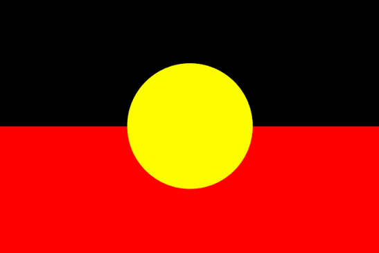
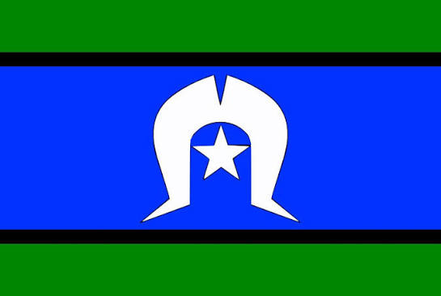

First things first...


Acknowledgement is paid to the Ngunnawal people, traditional custodians and sovereign owners of the lands of the ACT and surrounding region. Recognition is given to their elders and community for their continuing culture and ongoing custodianship.
Using Play it Safe
Play it Safe is a free community resource. Australia-wide, overdose deaths exceed the loss of life on Australian roads. In the ACT, 25 people died from overdose in 2024. In September 2026, ACT Policing reported seven suspected overdose deaths in the previous month. Every one of these lives mattered.
Sources: Penington Institute (2026) · Region (2026) · ACT Policing (2026)
Opioids remain the most common drug type involved in overdose deaths, alone or in combination with alcohol or other substances. Naloxone can temporarily reverse overdoses caused by opioids, including synthetic opioids like fentanyl. Naloxone is available for FREE in Canberra. Naloxone can save lives; knowing CPR can save lives. Always call 000 for a suspected overdose, even if naloxone has been given.
This app will let you know where to get naloxone, and how to administer it. Your action could save a life.
Play it Safe contains vital information where you need it: in your pocket, on your phone. Play it Safe provides you with critical information, including:
- Direct contact with Emergency Services
- Instructions and timing for CPR in an emergency
- Step-by-step instructions for giving Naloxone in an emergency
Play it Safe is your direct connection to CanTEST. Find out how and where to get pills tested and get the latest alerts.
Play it Safe provides connection to harm reduction information, an interactive guide to dangerous substance combinations, dose and hydration timers, and up-to-date legal information.
Play it Safe is also a connection point to CAHMA and Directions Health as critical community connections.
Install and share
This app is made to be installed and shared.
Install in a few taps
- iPhone or iPad: Open Play it Safe in Safari. Tap Share (you may need to tap the menu first), then Add to Home Screen. Leave Open as Web App on if shown, then tap Add.
- Android: Open Play it Safe in Chrome. Tap the ⋮ menu, then Add to Home screen → Install. Follow the prompts.
Open it from your home screen whenever you need it. Share the link or let someone scan the QR code above.
https://playitsafecbr.app
Show you care about OVERDOSE deaths. Screenshot or save the orange tile.
On DECEMBER 1, 2026, post just the orange QR tile with the words I CARE to your social media account for ONE DAY.
ONE overdose is too many. SAVE ONE life.
More help: Apple · Android